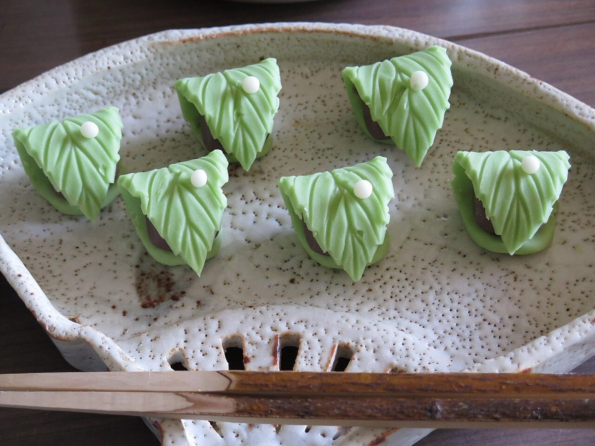
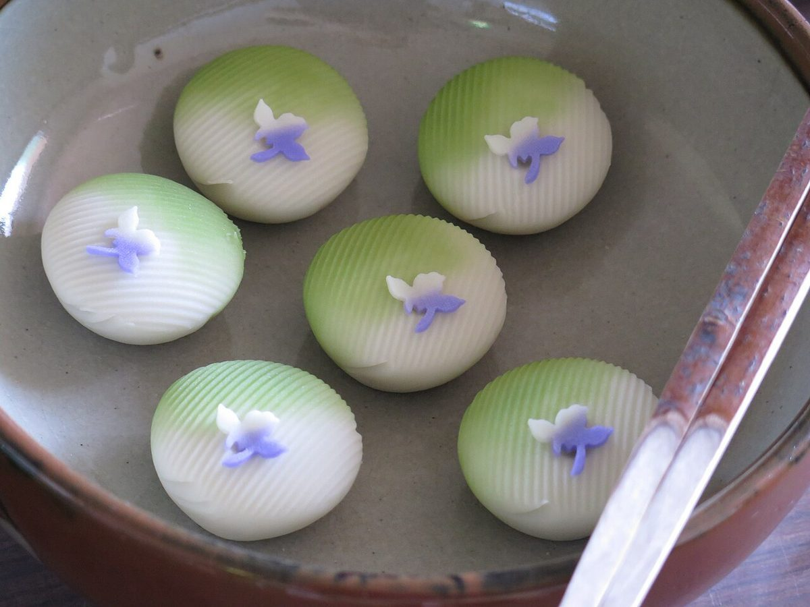
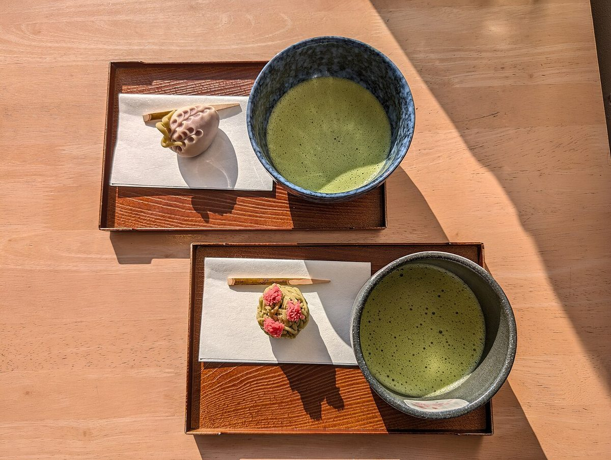

お店について
「確認できていること」と「準備中のこと」を分けて掲載しています。


確認できていること
| 店名 | 羽州茶屋 |
|---|---|
| 所在地 | 山形県新庄市本町3-51 |
| 電話 | 0233-29-7776 |
| @usyuchaya |
準備中のこと
| 営業時間 | 準備中(お問い合わせください) |
|---|---|
| 定休日 | 準備中(お問い合わせください) |
| 席数 | 準備中(お問い合わせください) |
| 駐車場 | 準備中(お問い合わせください) |
| お支払い方法 | 準備中(お問い合わせください) |
| お店の歴史 | 準備中(お問い合わせください) |
| スタッフ | 準備中(お問い合わせください) |
コンセプト案
気になった人が、迷わず連絡できるページ。
まだ確認できていない情報が多い段階のため、分かっていることと準備中のことを隠さず分けて見せ、電話とInstagramで最新の情報へご案内する。これがこのページを作った側の案です。
これは制作側の提案であり、お店の理念や公式の考え方ではありません。


